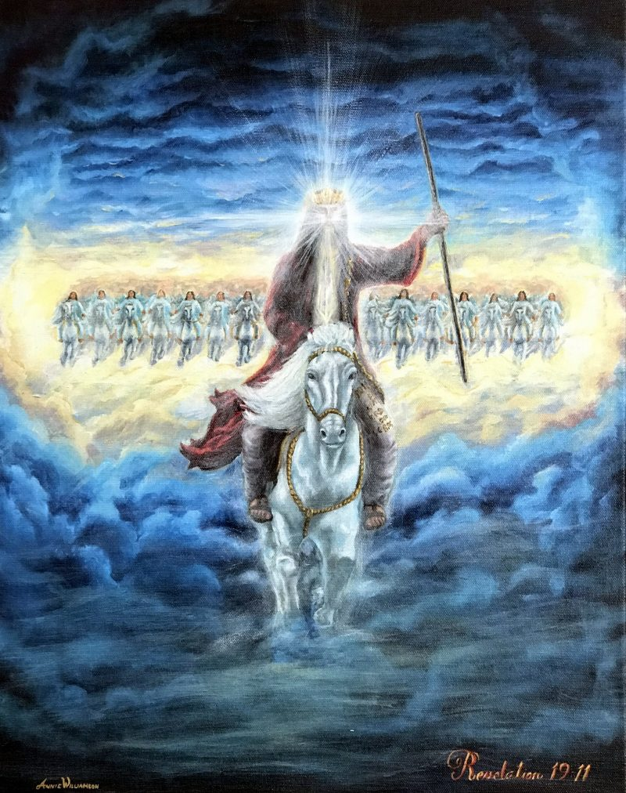
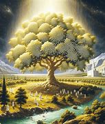
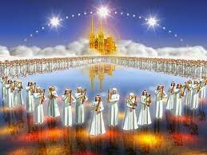

"And I saw the holy city, New Jerusalem, coming down from God out of heaven..." – Revelation 21:2

"They shall see the Son of man coming in the clouds of heaven with power and great glory." – Matthew 24:30"For we must all appear before the judgment seat of Christ..." – 2 Corinthians 5:10"And the books were opened... and another book was opened, which is the book of life." – Revelation 20:12"The gates of it shall not be shut at all by day: for there shall be no night there." – Revelation 21:25

"On either side of the river, was the tree of life... and the leaves of the tree were for the healing of the nations." – Revelation 22:2"The Lamb which is in the midst of the throne shall feed them..." – Revelation 7:17"Blessed is the man that endureth temptation... he shall receive the crown of life." – James 1:12

"A pure river of water of life, clear as crystal, proceeding out of the throne of God and of the Lamb." – Revelation 22:1